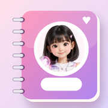

Rotina da Nuni
Coloque o app na tela de início, com o ícone e o nome já prontos:
- Toque em Compartilhar na barra do Safari.
- Escolha Adicionar à Tela de Início.
- Desligue “Abrir como App Web”. Assim ele abre no Safari, onde você já está logada no Claude.
- Toque em Adicionar.